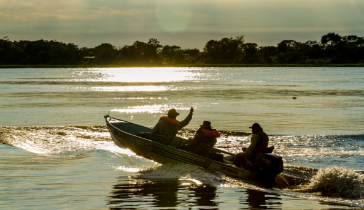
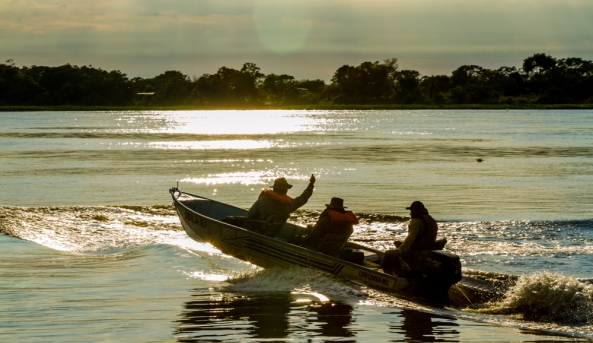
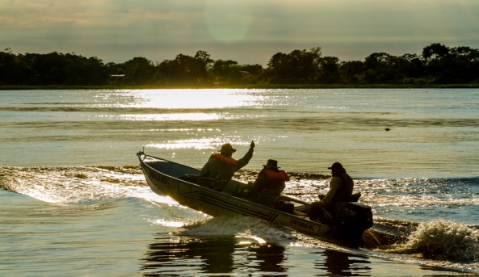

O Bioma Pantanal é a maior planície inundável do mundo. Com uma área de cerca de 250 mil Km², o Pantanal estende-se pela Bolívia, Paraguai e Brasil, sendo aproximadamente 62% no Brasil, nos estados de Mato Grosso e Mato Grosso do Sul. Inserido na parte central da bacia hidrográfica do Alto Paraguai, o Pantanal é influenciado pelo rio Paraguai e por seus vários afluentes que alagam a região formando extensas áreas alagadiças.O Pantanal é caracterizado pela alternância entre períodos de muita chuva, que acontecem de outubro a março, e períodos de seca nos meses de abril a setembro. Possui região plana, levemente ondulada, com alguns raros morros isolados e com muitas depressões rasas. As altitudes não ultrapassam 200 metros acima do nível do mar e a declividade é quase nula.
O solo do Pantanal é principalmente arenoso e argiloso, esse fator associado à baixa declividade e aos muitos rios dessa região contribui para o alagamento do Pantanal. As primeiras chuvas caem sobre um solo poroso e são facilmente absorvidas, com o umedecimento da terra várias espécies de vegetais rebrotam e a planície se torna verde. Em poucos dias o solo não consegue mais absorver a água que passa a se acumular nas áreas mais baixas. O nível dos rios e lagoas aumenta provocando enchentes e o Pantanal se torna um enorme alagado. Durante a seca, a água fica restrita aos leitos dos rios, lagoas e banhados.

A fauna do Pantanal é bastante diversificada, levantamentos registraram 325 espécies de peixes, 53 anfíbios, 98 répteis, 656 aves e 159 mamíferos. Jacarés, capivaras e onças estão entre os principais animais. Destacam-se também a arara-azul e o tuiuiú (ave símbolo do Pantanal). A flora dessa região também é bastante diversificada, formando um mosaico de plantas do Cerrado, Floresta Amazônica, Mata Atlântica e Chaco (paraguaio e boliviano). Nas áreas alagadas encontramos gramíneas, nas regiões intermediárias desenvolvem-se pequenos arbustos e vegetação rasteira e nas regiões mais altas a paisagem é parecida com a da Caatinga, com árvores de grande porte. No Pantanal é comum a presença de formações vegetais como o carandazal, formado pelas palmeiras carandá, e o buritizal, onde predominam os buritis.

 
